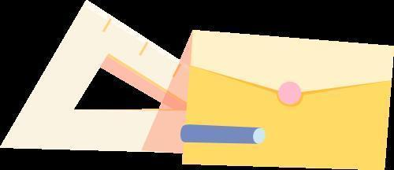
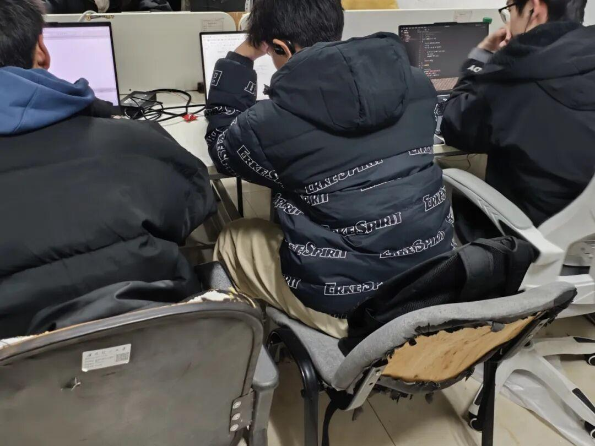
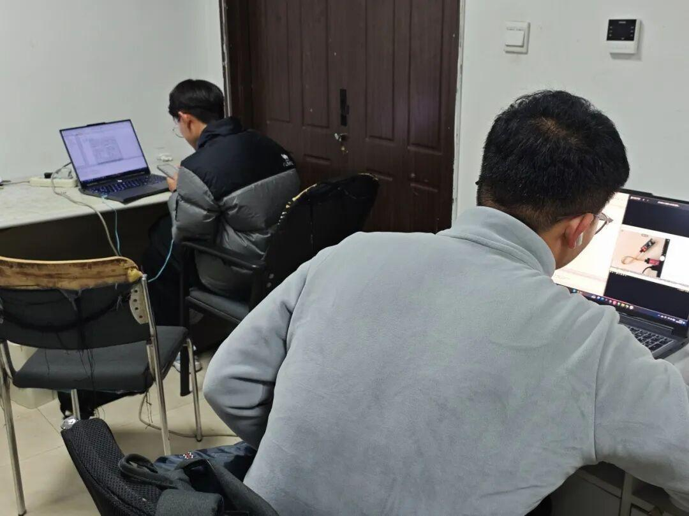
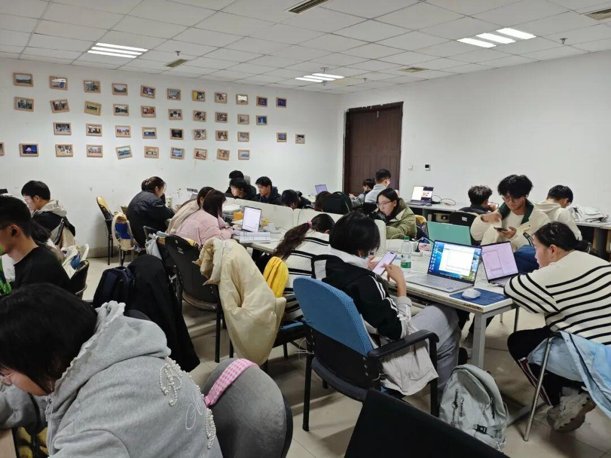

考察组采访 | 注入新活力，皆因有你
前言

全新气象


经过又一番的培训后，每个成员沉浸在独有自己的世界里：有的对刚才的培训仍留有余问，在思考自己的不足；有的对培训内容已了然于胸，在自学新的知识。总之，每个人都展示出了自己的精气神，给战队带来新氛围。
成员采访


有幸采访到了部分考察组成员，以下是他对考察组这些天的印象：“在考察组里，感受到了学习新知识和与新同伴交流的充实。在考察组的统一培训下，对相关软件学习的热情不降反涨，良好的自律习惯携着我昂扬前进。”
另一位考察组成员讲述了他对今后的打算：“认真学好Keli和嘉立创EDA的使用，精通stm32单片机；多与组内人员交流，增加眼界；成为一个熟练的‘焊板子’，最重要的是争取明年成为正式队员。”
负责人的希冀

这次还采访到了考察组的相关负责人——大三机械组的黄海崴，他对考察组的成员们充满了希冀，希望他们能够认真学习，全员通过明年的考核，也相信他们能在培训过程中夯实自己的基础，学到关于自己领域方面的知识，成长自我，展示优点，改进不足，紧跟团队的脚步，在每个备赛过程中做好准备，为团队添砖加瓦，不仅成为团队的接班人，更成为新时代的接班人。
“画图不画错，工程图方面的不要出错。在画图这块别出问题，可能都是大一大二的，没有经历过一个完整的装配和画图的经历。第一次画图有些问题是在所难免的，这些都会进行一个讲解。”这都是他的经验所得，也感谢他分享对考察组新成员的建议。
个人总结


“正值青春奋斗时”。通过这次考察组的采访，我对新时代青年有了更深感触。他们选择了沈理电协，沈理电协也力所能及地教会他们。在这个温馨、和睦的大家庭里，他们能够有机会勇敢追求自己的梦想，不断提升自我，为未来的成功打下坚实的基础。沈理电协也会为他们提供不一样的舞台，绽放自己。
最后
态度决定一切
事实胜于雄辩
你们终将确信
自己奋斗的目标
是你的信仰
END
排版|zzz
文案|zzz
图片|zzz
审核|青唐三月